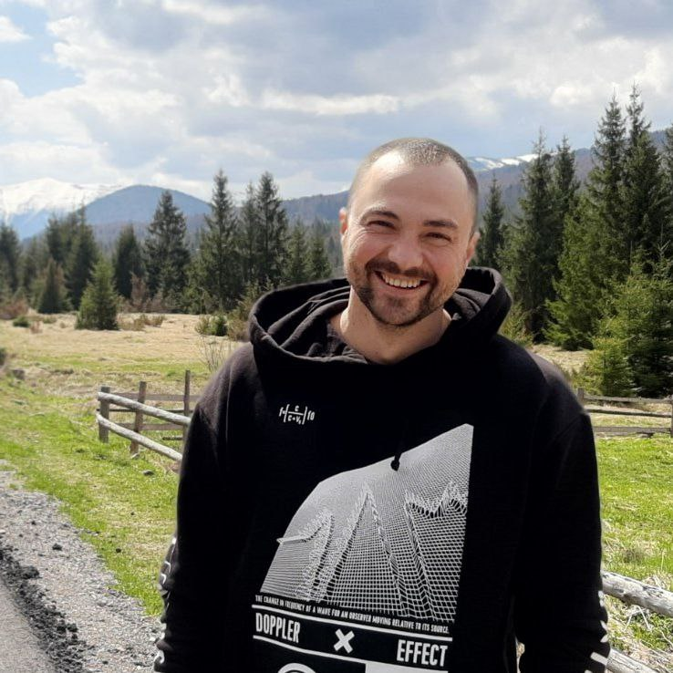

Олександр Поздняков
Контактна інформація: 0664700623 | 0978197801
Професійний шлях та досвід
Sales Manager & Digital Marketer & Frontend Developer
Маю понад 20 років досвіду в торгівлі. Мій шлях включає розробку торгових маршрутів з нуля та ведення переговорів будь-якої складності. Не боюся "холодних дзвінків" — маю величезний практичний досвід у цьому напрямку та чітке розуміння психології продажів.
Завжди шукаю та впроваджую ефективні рішення для бізнесу. Наприклад, власноруч розробив Telegram-бот для фірми, який стабільно приносить нові заявки. Зараз активно опановую IT-напрямок, оскільки завжди мене цікавив код і люблю вчитися чомусь новому та ніколи не боюся складних викликів.
Переконаний, що немає задач, які неможливо виконати — головне знайти правильний підхід. Шукаю амбітну команду, де зможу реалізувати свій досвід і технічні навички для досягнення результату та отримувати за це гідну винагороду.
Навички та компетенції
- Sales Management: Прямі продажі, розробка маршрутів, робота з дебіторською заборгованістю, холодні дзвінки.
- Digital Marketing: Налаштування рекламних кампаній в Google Ads та Facebook Ads, веб- аналітика, робота з лідами.
- Technical Skills: Розробка Telegram-ботів, HTML, CSS, JavaScript, React, Git, Python.
- Soft Skills: Позитивне мислення, навички переговорів, швидке навчання.
Освіта та сертифікати
-
Genius Space — Комплексний інтернет-маркетолог.
Вивчення маркетингових стратегій, аналітики та роботи з трафіком.
-
Genius Space — Спеціаліст з таргетованої реклами.
Налаштування та оптимізація кампаній у Meta (Facebook & Instagram).
-
Власний проект - Telegram-бот (Smart Sender).
Розробка автоматизованої замовлень для бізнесу.
-
Genius Space - Frontend Development.
Опанування HTML5, CSS3, JavaScript та React.
Якщо Вас зацікавило моє резюме, напишіть мені прямо зараз
Зв'язатись